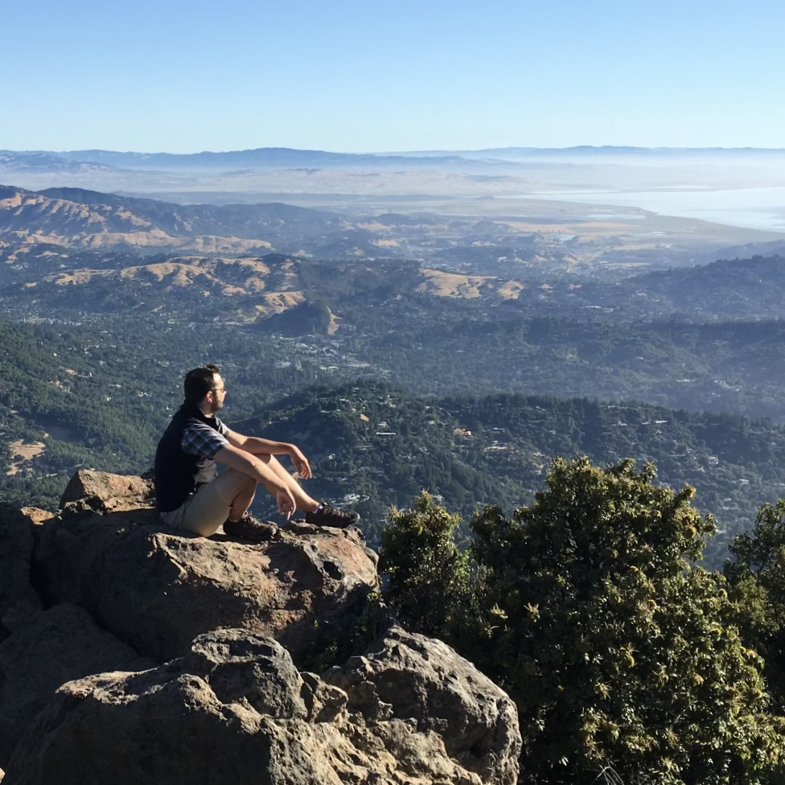

About Me

Ever since I was a little boy I dreamed of being a web developer… and if you believe that, then I’ve got a bridge to sell you. In truth, my path to becoming a web developer has been a long and unpredictable journey. I was a trained psychologist who dreamt of being an Air Force pilot, an English teacher stricken with wunderlust, an insufficiently greedy investment advisor, and an automotive entrepreneur who thinks sinking money into cars is wasteful. It’s been fun.
For me, life hasn’t been a carefully orchestrated symphony of coordinated harmonies all functioning to tell a single coherent story. My life’s soundtrack is more akin to jazz: largely improvised and full of off-beat rhythms and deliberate deviations in pitch, harnessing the chaotic beats of life to create something new and beautiful. It's that ability to improvise to produce unique and interesting websites that fuels my work as a web developer. I bring the full weight of my insatiable curiosity, globe-trotting experience, and multifaceted professionalism to bear in creating delightful and functional websites that keep my clients happy and coming back for more.